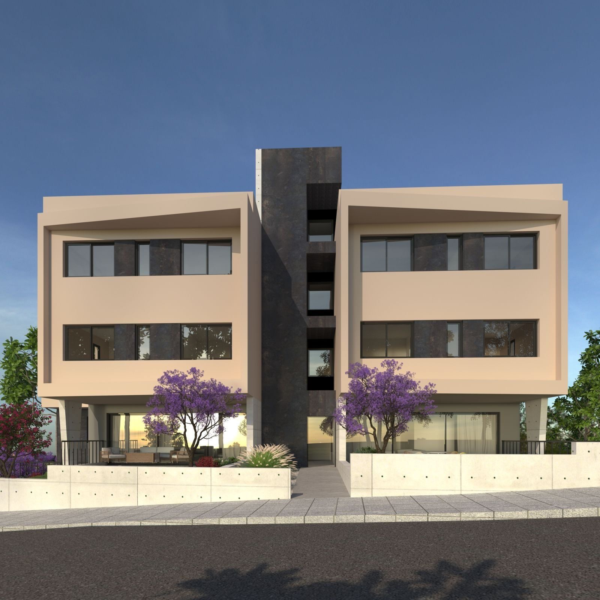
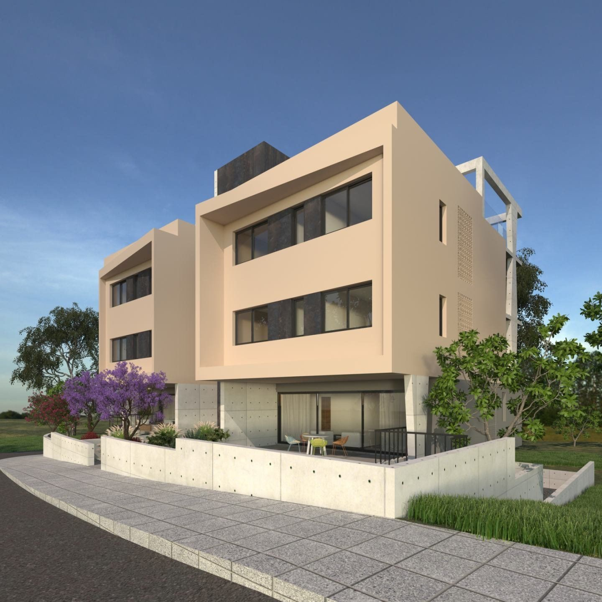
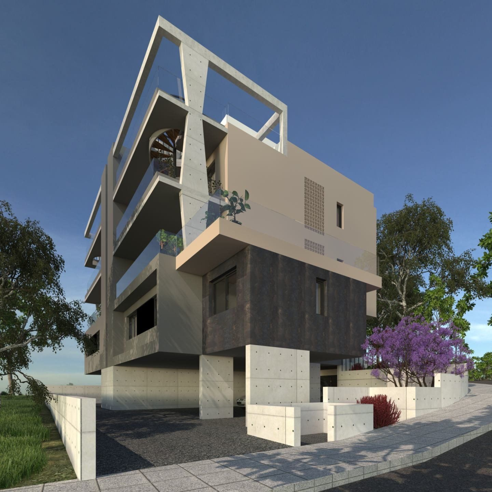
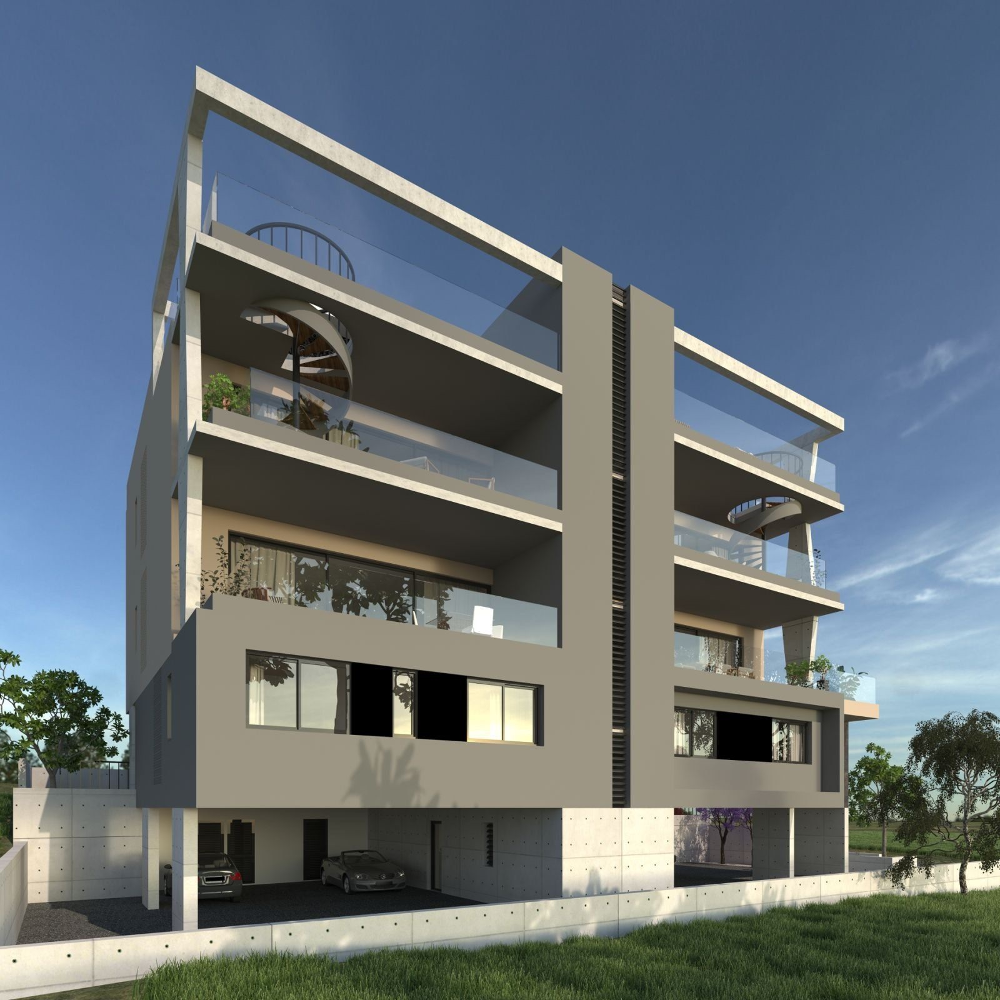
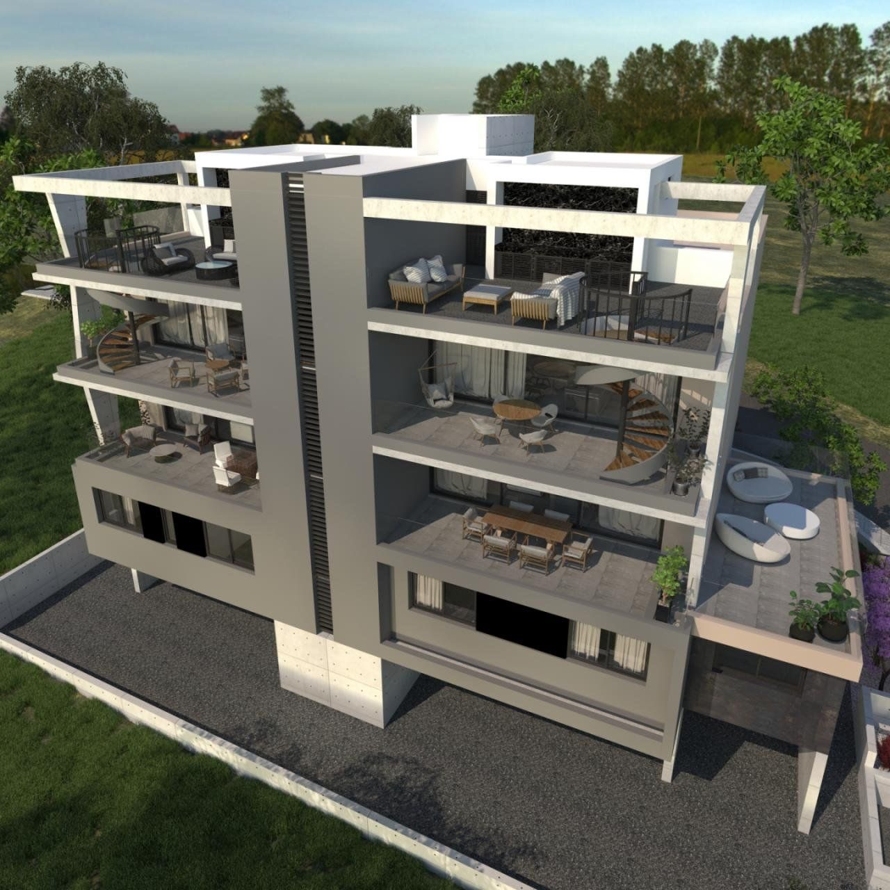

Ypsonas, Limassol, Cyprus

Six apartments in Ypsonas, with two- and three-bedroom layouts. The developer currently lists roof-garden apartments 201 and 202 as available; the four lower apartments are sold. Confirm current availability directly with the developer.
Selected original views from the developer’s project gallery.




Under construction · developer lists 2027 completion; apartments 201 and 202 shown as available on 8 October 2026. Source checked 8 October 2026; availability and dates require developer confirmation.
This example is not accepting enquiries. A published presentation includes the contact details and enquiry links you approve.